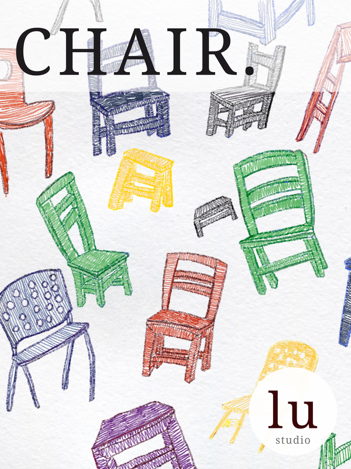
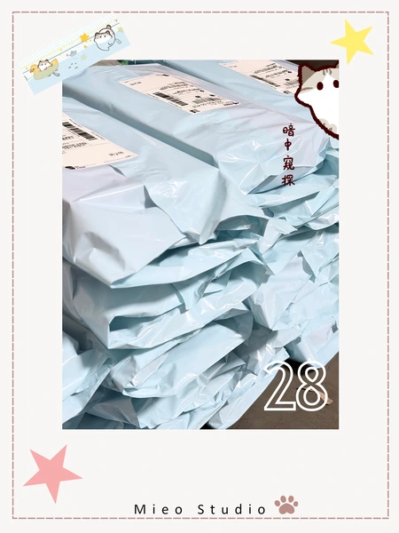
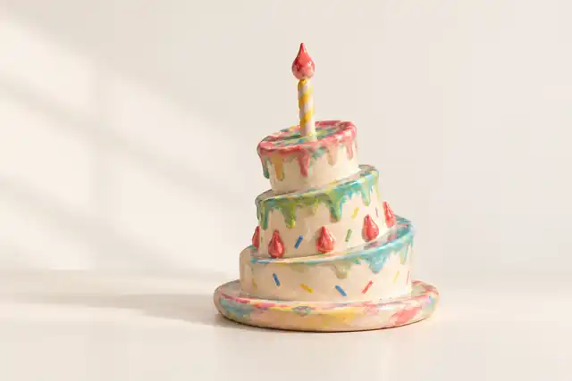
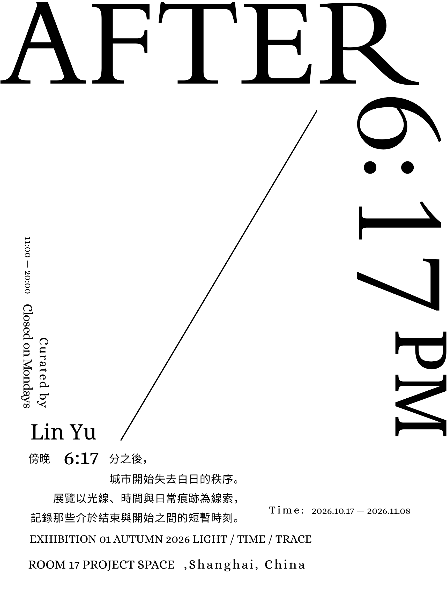
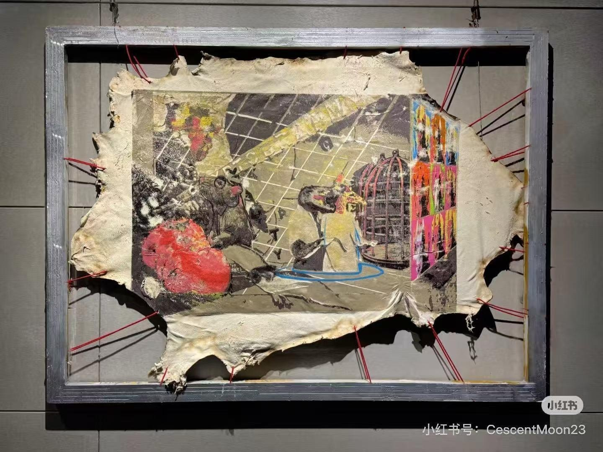
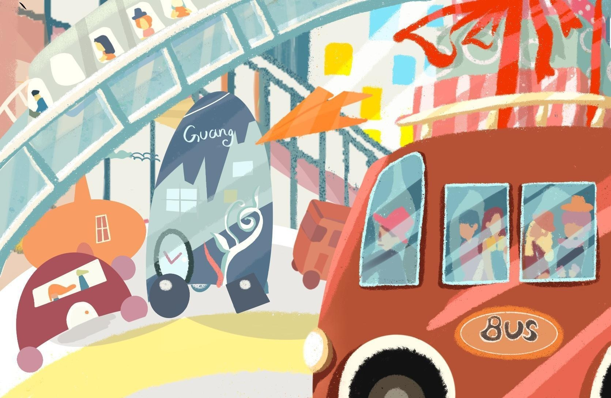
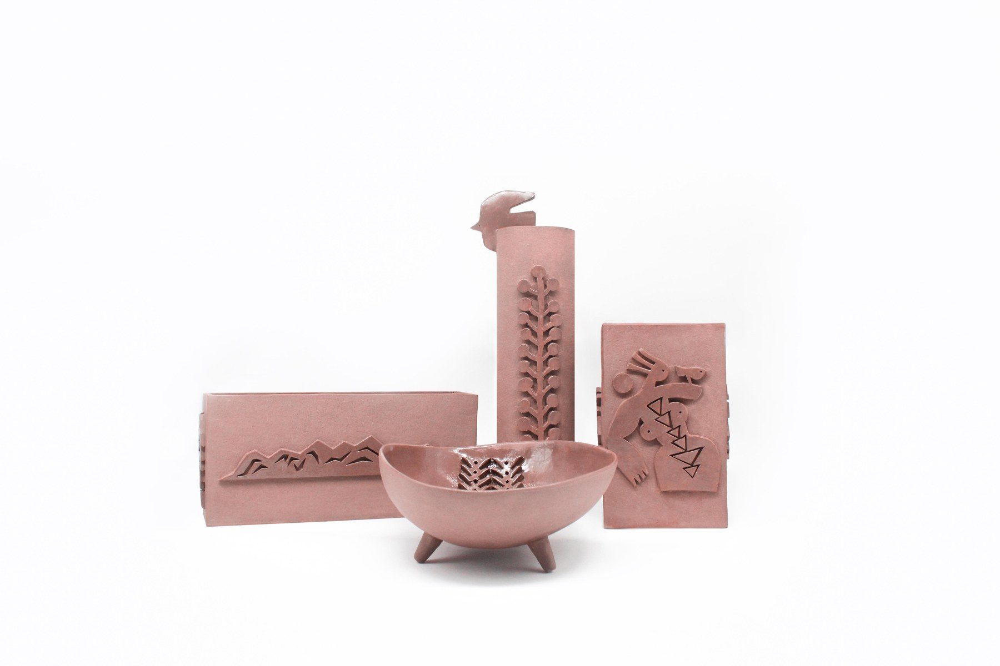

PATTERN / PRODUCT VISUAL
CHAIR
2026纹样、字形与布面本册
ARTWORK ARCHIVE
按项目、年份与类型查找，再进入完整作品或项目叙事。
PROJECT / YEAR / TYPE
7 个项目

PATTERN / PRODUCT VISUAL
纹样、字形与布面本册

BRAND / COMMERCIAL VISUAL
品牌、包装与产品视觉

VISUAL OBJECT STUDY
形态、材质与场景研究

GRAPHIC DESIGN / CURATORIAL STUDY
字体海报与策展模拟

PRINTMAKING
个人创作与印制语言

ILLUSTRATION
交通、建筑与公共空间

MATERIAL / CERAMICS
器物与表面图形
没有匹配的项目。可重置筛选继续浏览。
GRAPHIC DESIGN / TYPOGRAPHY
以光线、时间与痕迹为线索的三张海报。王璐通过留白、字形重叠与文字遮挡，改变阅读的节奏。
查看策展模拟与展场动线 →原始海报保持不变。图中的场馆、展期及「Lin Yu」署名属于练习题的虚构设定，不代表真实展览或委托。
PRINTMAKING / PERSONAL PRACTICE
以图像本身为起点，关注色彩、构图、材料表面，以及印制过程中留下的痕迹。
版画专业训练与插画、材料实践共同构成我的视觉基础，也为艺术内容与文创设计提供图像来源。
另有独立丝网作品《线纪》（2026）、《迹》（2026）与女性主题的《迁移：压与推》（2025），均为全开尺寸。三件作品分别创作，彼此不构成系列。
ILLUSTRATION / MATERIAL EXPLORATION
用色块与节奏组织场景，也让图像走向不同材料。
插画以交通、建筑和人物构成城市场景，在不同画面中延续色彩与构图语言。下方陶艺实践围绕瑶族文化题材展开，探索图像进入器物轮廓、表面和细部的方式。